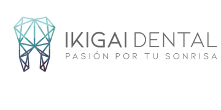
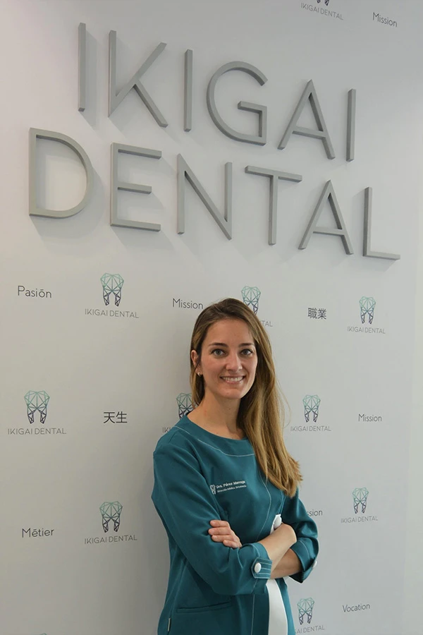
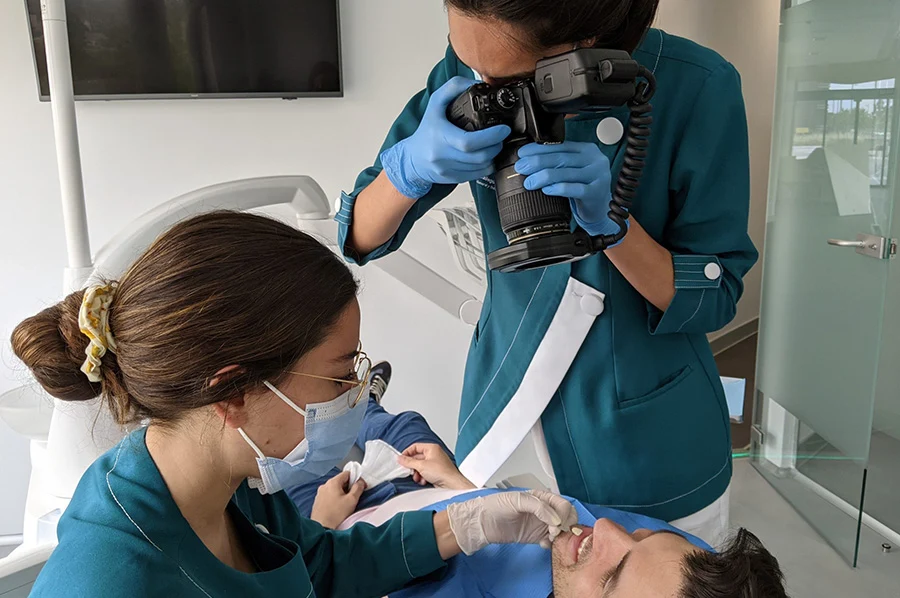
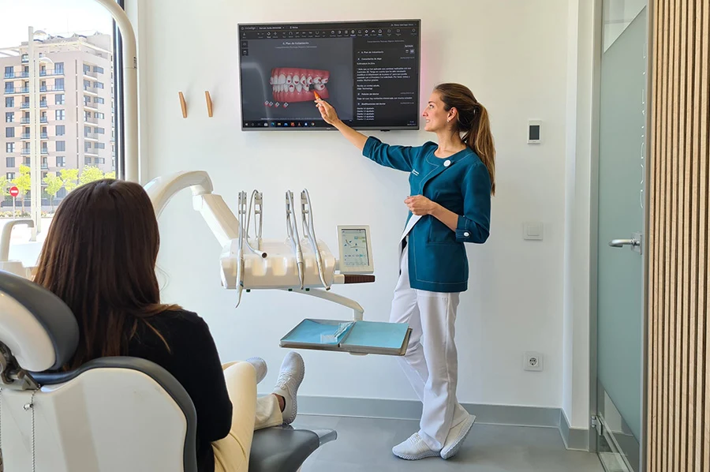
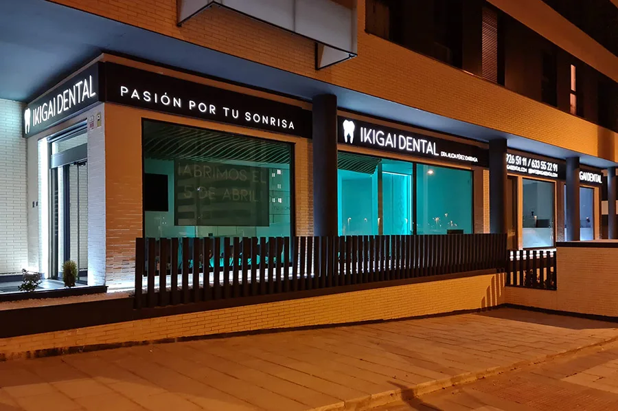

Complejo al sonreír
Muchas personas se limitan socialmente porque no se sienten cómodas con la posición de sus dientes.

Madrid | Ikigai Dental | Ortodoncia invisible de alta precisión
Durante este mes, la Dra. Alicia Pérez ofrece 15 valoraciones completas sin coste, con todas las pruebas diagnósticas incluidas y una visión estética, funcional y holística de tu caso.

Especialista en ortodoncia con un abordaje clínico, estético y tecnológico de alto nivel.
Antes de seguir posponiéndolo
Hay pacientes que llevan años escondiendo su sonrisa, evitando fotos o acostumbrados a una mordida que ya sienten como "normal". Pero lo que hoy parece pequeño, con el tiempo puede derivar en más desgaste, más complejidad y más años sin disfrutar de una sonrisa que realmente sientas tuya.
Muchas personas se limitan socialmente porque no se sienten cómodas con la posición de sus dientes.
Un mal encaje puede favorecer desgastes y compensaciones que conviene estudiar cuanto antes.
Cuanto antes entiendas lo que ocurre y tus opciones reales, antes podrás decidir con calma y con criterio.
Qué incluye la valoración sin coste
No es una revisión rápida ni una visita comercial. Es una valoración premium para entender a fondo tu caso, resolver tus dudas y orientarte con un plan de acción claro.
Análisis completo para detectar con más precisión el estado de tu mordida, estructura y necesidades reales.
Tu sonrisa se estudia con herramientas digitales para observar detalles estéticos y funcionales con mayor claridad.
Recibirás una opinión experta y una orientación honesta sobre qué ocurre, qué riesgos hay y qué opciones tendrían mas sentido para ti.
Saldrás con una hoja de ruta clara para saber cómo cuidar, corregir o planificar tu sonrisa con seguridad.
Si llevas tiempo pensándolo
Sobre la doctora

Ortodoncia de alta precisión
La Dra. Alicia Pérez ha centrado su trayectoria en la ortodoncia y en la planificación rigurosa de cada tratamiento. Su enfoque no se limita a mover dientes: busca armonía facial, función, estabilidad y una decisión bien pensada para cada paciente.
En Ikigai Dental combina experiencia clínica, diagnóstico digital y una mirada integral para estudiar cómo tu mordida puede influir en tu bienestar y en la forma en la que vives tu sonrisa.
Da el paso con criterio
Tecnología que genera confianza
Ikigai Dental aporta ese punto diferencial que hace que una valoración se sienta realmente premium: medios diagnósticos, explicaciones claras y una forma de trabajar donde la precisión es parte del cuidado.

Documentación fotográfica y pruebas para observar tu sonrisa desde todos los ángulos relevantes.

Visualizar tu caso ayuda a entender mejor los cambios posibles y las decisiones más inteligentes.

Clínica moderna, cuidada y pensada para que desde el primer minuto sientas confianza en donde estás.
Hazlo ahora
Casos reales
Estos antes y después ayudan a entender por qué un buen diagnóstico y una buena planificación importan tanto.
Corrección de alineación y mejora global de la armonía de la sonrisa.
Estudio de mordida y posición para devolver más equilibrio y estabilidad.
Dientes más alineados y una sonrisa con más orden, limpieza visual y confianza.
Una mejora visible que parte siempre de comprender el caso con precisión, no de improvisar.
Lo importante no es solo tratarte
Esta valoración está pensada para personas que quieren entender su situación sin compromiso, resolver dudas de verdad y saber si merece la pena actuar ahora o esperar. Si tu caso requiere tratamiento, podrás decidirlo con información, acompañamiento y una visión profesional de alto nivel.
Solicita tu valoración
Si encajas en esta convocatoria mensual, revisaremos tu solicitud y te guiaremos para agendar tu valoración con la Dra. Alicia Pérez en Ikigai Dental.